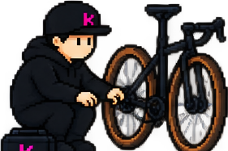
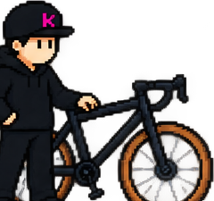
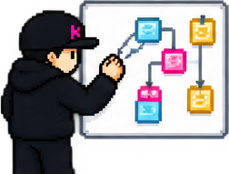
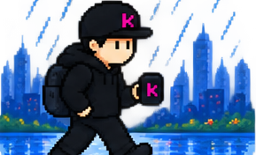
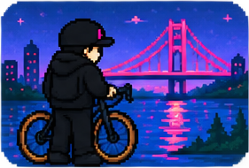
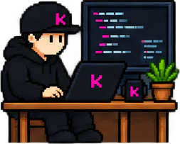
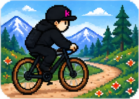
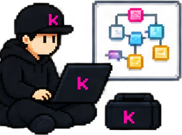

Untangling systems that have grown wild — quietly replacing the chain while the wheels keep turning.
Chapter 01 · Starting point
Route status: Ready.
Every project starts somewhere. Usually with more questions than answers, a rough map, and a bike that mostly works.

Chapter 02 · Today's terrain
Three kinds of ground I ride for a living. Same as your roadmap, only muddier.

Untangling systems that have grown wild — quietly replacing the chain while the wheels keep turning.

Helping teams decide where to go next — reading the map right-side-up, then committing to a direction.

Keeping momentum when projects slow down — steady cadence, no heroics, into the wind if we must.
Chapter 03 · Ride log
Real projects, logged as rides. This is the one I'm on right now — distances are real, and the weather always changes.

Ride #001
Time-tracking platform · ongoing
Trail comic · Debugging


Chapter 04 · Field notes
Short dispatches, written at the campsite.

Chapter 05 · Garage
Odds and ends from the workshop. Free. No email required.
Neon-horizon desktops for long rides.
Rider stickersThe whole sprite sheet. Slap them anywhere.
Terminal themesAlacritty, iTerm & Windows Terminal.
VS Code themeNeon Precision for your editor.
Pixel iconsThe full icon & component gallery.
The logbook (CV)Where the Rider has actually been.


Chapter 06 · Meet the mechanic
Behind the pixel hat is Kai-Mikael Alanne — an independent software consultant who has spent years as a hands-on tech lead, shipping real products from idea to production. The bike is a metaphor. The engineering is not.
I like small teams, clear routes, and code that still runs when the weather turns.
Pick a route →